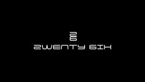
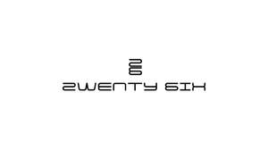

Trade Mark Journal No.2025/014 4 April 2025
UK00004176885 20 March 2025 (25)
Mark 1

Mark 2

- Class 25
- Clothing for sports; Sports clothing; Clothes for sports; Jackets being sports clothing; Sports garments; Articles of sports clothing; Sports clothing [other than golf gloves]; Footwear for sports; Sports footwear; Clothes for sport; Athletic clothing; Sports shirts; Sports jackets; Sports shoes; Sports wear; Clothing; Footwear not for sports; Triathlon clothing; Footwear for use in sport; Footwear for sport; Sports jerseys; Leisure clothing; Sports vests; Sports pants; Sports bibs; Clothing for leisure wear; Moisture-wicking sports shirts; Parts of clothing, footwear and headgear; Sports socks; Sport shirts; Jackets [clothing]; Sport shoes; Sports headgear [other than helmets]; Athletics footwear; Moisture-wicking sports bras; Ready-to-wear clothing; Shorts [clothing]; Casual clothing; Moisture-wicking sports pants; Water-resistant clothing; Articles of clothing; Clothing for cyclists; Beach clothing; Gloves [clothing]; Gloves as clothing; Athletic footwear; Clothing for children; Men's clothing; Jackets (Stuff -) [clothing]; Stuff jackets [clothing]; Sportswear; Waterproof clothing; Sports caps; Windproof clothing; Tops; Tank tops; Tracksuit tops; Baselayer tops; Tops [clothing]; Hooded tops; Fleece tops; Vest tops; Warm-up tops; Cycling tops; Tracksuit bottoms; Baselayer bottoms; Bottoms [clothing]; Sweat bottoms; Jogging bottoms; Jogging bottoms [clothing]; Leggings [trousers]; Jumpers [sweaters]; Sleeved jackets; Trousers shorts; Sweaters; Clothes; Fashion hats; Knitwear [clothing]; Hoods [clothing]; Jerseys [clothing]; Clothing for cycling; Ready-made clothing; Sports singlets; Sports caps and hats; Athletic shoes; T-shirts; Short-sleeved T-shirts; Printed t-shirts; Long-sleeved shirts; Tee-shirts; Sweatpants; Shorts; Pants; Hooded sweatshirts; Embroidered clothing; Sleeveless pullovers; Sweat shorts; Sweat pants; Swim shorts; Clothing for infants; Clothing for men, women and children; Infant clothing; Boys' clothing; Childrens' clothing; Rainproof clothing; Weatherproof clothing; Shoes for leisurewear; Leisurewear; Gymwear; Casualwear; Swimwear; Menswear; Leisure footwear; Outerwear; Sneakers [footwear]; Footwear; Casual footwear; Footwear for men; Tracksuits; Footwear for women; Beachwear; Sweat-absorbent underclothing; Women's clothing; Rainwear; Trainers [footwear].
2WENTY 6IX LTD